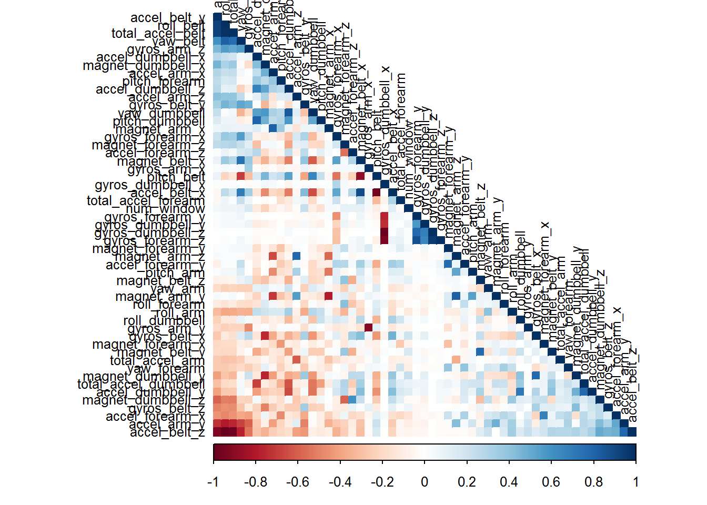

“Six young health participants were asked to perform one set of 10 repetitions of the Unilateral Dumbbell Biceps Curl in five different fashions: exactly according to the specification (Class A), throwing the elbows to the front (Class B), lifting the dumbbell only halfway (Class C), lowering the dumbbell only halfway (Class D) and throwing the hips to the front (Class E).
Class A corresponds to the specified execution of the exercise, while the other 4 classes correspond to common mistakes. Participants were supervised by an experienced weight lifter to make sure the execution complied to the manner they were supposed to simulate. The exercises were performed by six male participants aged between 20-28 years, with little weight lifting experience. We made sure that all participants could easily simulate the mistakes in a safe and controlled manner by using a relatively light dumbbell (1.25kg)."
2.1.1 Loading Neccessary Libraries
As a first step, we will load the necessary libraries that we will need to conduct the exploratory analysis and data cleaning as well as the final modelling. In addition, we will make sure that reproducibility of our result is secured by setting and appropriate seed
library(caret)
## Warning: package 'caret' was built under R version 3.4.4
## Loading required package: lattice
## Loading required package: ggplot2
## Warning: package 'ggplot2' was built under R version 3.4.4
library(randomForest)
## Warning: package 'randomForest' was built under R version 3.4.4
## randomForest 4.6-14
## Type rfNews() to see new features/changes/bug fixes.
##
## Attaching package: 'randomForest'
## The following object is masked from 'package:ggplot2':
##
## margin
library(corrplot)
## Warning: package 'corrplot' was built under R version 3.4.4
## corrplot 0.84 loaded
set.seed(161019) #for reproducibility
2.1.2 Loading the Data
As a next step we will load the training and testing datasets from the provided URLs. In sequence, we will subset the training data into “train” (70% of the initial dataset) and “validation” (rest 30% of the initial dataset). The testing dataset will be used at the end of our analysis in order to predict the extra 20 cases.
#Assigning the dataset URLs to a name
Url_training <- "http://d396qusza40orc.cloudfront.net/predmachlearn/pml-training.csv"
Url_testing <- "http://d396qusza40orc.cloudfront.net/predmachlearn/pml-testing.csv"
#Reading the datasets from the URLs and assigning each to a name
training <- read.csv(url(Url_training))
testing <- read.csv(url(Url_testing))
#Subsetting the training dataset in training and test subset
inTrain <- createDataPartition(training$classe, p=0.70, list=FALSE)
TrainSet <- training[inTrain, ]
ValidSet <- training[-inTrain, ]
#To check what eacxh data contains
str(TrainSet)
## 'data.frame': 13737 obs. of 160 variables:
## $ X : int 1 3 6 8 9 10 11 12 13 14 ...
## $ user_name : Factor w/ 6 levels "adelmo","carlitos",..: 2 2 2 2 2 2 2 2 2 2 ...
## $ raw_timestamp_part_1 : int 1323084231 1323084231 1323084232 1323084232 1323084232 1323084232 1323084232 1323084232 1323084232 1323084232 ...
## $ raw_timestamp_part_2 : int 788290 820366 304277 440390 484323 484434 500302 528316 560359 576390 ...
## $ cvtd_timestamp : Factor w/ 20 levels "02/12/2011 13:32",..: 9 9 9 9 9 9 9 9 9 9 ...
## $ new_window : Factor w/ 2 levels "no","yes": 1 1 1 1 1 1 1 1 1 1 ...
## $ num_window : int 11 11 12 12 12 12 12 12 12 12 ...
## $ roll_belt : num 1.41 1.42 1.45 1.42 1.43 1.45 1.45 1.43 1.42 1.42 ...
## $ pitch_belt : num 8.07 8.07 8.06 8.13 8.16 8.17 8.18 8.18 8.2 8.21 ...
## $ yaw_belt : num -94.4 -94.4 -94.4 -94.4 -94.4 -94.4 -94.4 -94.4 -94.4 -94.4 ...
## $ total_accel_belt : int 3 3 3 3 3 3 3 3 3 3 ...
## $ kurtosis_roll_belt : Factor w/ 397 levels "","-0.016850",..: 1 1 1 1 1 1 1 1 1 1 ...
## $ kurtosis_picth_belt : Factor w/ 317 levels "","-0.021887",..: 1 1 1 1 1 1 1 1 1 1 ...
## $ kurtosis_yaw_belt : Factor w/ 2 levels "","#DIV/0!": 1 1 1 1 1 1 1 1 1 1 ...
## $ skewness_roll_belt : Factor w/ 395 levels "","-0.003095",..: 1 1 1 1 1 1 1 1 1 1 ...
## $ skewness_roll_belt.1 : Factor w/ 338 levels "","-0.005928",..: 1 1 1 1 1 1 1 1 1 1 ...
## $ skewness_yaw_belt : Factor w/ 2 levels "","#DIV/0!": 1 1 1 1 1 1 1 1 1 1 ...
## $ max_roll_belt : num NA NA NA NA NA NA NA NA NA NA ...
## $ max_picth_belt : int NA NA NA NA NA NA NA NA NA NA ...
## $ max_yaw_belt : Factor w/ 68 levels "","-0.1","-0.2",..: 1 1 1 1 1 1 1 1 1 1 ...
## $ min_roll_belt : num NA NA NA NA NA NA NA NA NA NA ...
## $ min_pitch_belt : int NA NA NA NA NA NA NA NA NA NA ...
## $ min_yaw_belt : Factor w/ 68 levels "","-0.1","-0.2",..: 1 1 1 1 1 1 1 1 1 1 ...
## $ amplitude_roll_belt : num NA NA NA NA NA NA NA NA NA NA ...
## $ amplitude_pitch_belt : int NA NA NA NA NA NA NA NA NA NA ...
## $ amplitude_yaw_belt : Factor w/ 4 levels "","#DIV/0!","0.00",..: 1 1 1 1 1 1 1 1 1 1 ...
## $ var_total_accel_belt : num NA NA NA NA NA NA NA NA NA NA ...
## $ avg_roll_belt : num NA NA NA NA NA NA NA NA NA NA ...
## $ stddev_roll_belt : num NA NA NA NA NA NA NA NA NA NA ...
## $ var_roll_belt : num NA NA NA NA NA NA NA NA NA NA ...
## $ avg_pitch_belt : num NA NA NA NA NA NA NA NA NA NA ...
## $ stddev_pitch_belt : num NA NA NA NA NA NA NA NA NA NA ...
## $ var_pitch_belt : num NA NA NA NA NA NA NA NA NA NA ...
## $ avg_yaw_belt : num NA NA NA NA NA NA NA NA NA NA ...
## $ stddev_yaw_belt : num NA NA NA NA NA NA NA NA NA NA ...
## $ var_yaw_belt : num NA NA NA NA NA NA NA NA NA NA ...
## $ gyros_belt_x : num 0 0 0.02 0.02 0.02 0.03 0.03 0.02 0.02 0.02 ...
## $ gyros_belt_y : num 0 0 0 0 0 0 0 0 0 0 ...
## $ gyros_belt_z : num -0.02 -0.02 -0.02 -0.02 -0.02 0 -0.02 -0.02 0 -0.02 ...
## $ accel_belt_x : int -21 -20 -21 -22 -20 -21 -21 -22 -22 -22 ...
## $ accel_belt_y : int 4 5 4 4 2 4 2 2 4 4 ...
## $ accel_belt_z : int 22 23 21 21 24 22 23 23 21 21 ...
## $ magnet_belt_x : int -3 -2 0 -2 1 -3 -5 -2 -3 -8 ...
## $ magnet_belt_y : int 599 600 603 603 602 609 596 602 606 598 ...
## $ magnet_belt_z : int -313 -305 -312 -313 -312 -308 -317 -319 -309 -310 ...
## $ roll_arm : num -128 -128 -128 -128 -128 -128 -128 -128 -128 -128 ...
## $ pitch_arm : num 22.5 22.5 22 21.8 21.7 21.6 21.5 21.5 21.4 21.4 ...
## $ yaw_arm : num -161 -161 -161 -161 -161 -161 -161 -161 -161 -161 ...
## $ total_accel_arm : int 34 34 34 34 34 34 34 34 34 34 ...
## $ var_accel_arm : num NA NA NA NA NA NA NA NA NA NA ...
## $ avg_roll_arm : num NA NA NA NA NA NA NA NA NA NA ...
## $ stddev_roll_arm : num NA NA NA NA NA NA NA NA NA NA ...
## $ var_roll_arm : num NA NA NA NA NA NA NA NA NA NA ...
## $ avg_pitch_arm : num NA NA NA NA NA NA NA NA NA NA ...
## $ stddev_pitch_arm : num NA NA NA NA NA NA NA NA NA NA ...
## $ var_pitch_arm : num NA NA NA NA NA NA NA NA NA NA ...
## $ avg_yaw_arm : num NA NA NA NA NA NA NA NA NA NA ...
## $ stddev_yaw_arm : num NA NA NA NA NA NA NA NA NA NA ...
## $ var_yaw_arm : num NA NA NA NA NA NA NA NA NA NA ...
## $ gyros_arm_x : num 0 0.02 0.02 0.02 0.02 0.02 0.02 0.02 0.02 0.02 ...
## $ gyros_arm_y : num 0 -0.02 -0.03 -0.02 -0.03 -0.03 -0.03 -0.03 -0.02 0 ...
## $ gyros_arm_z : num -0.02 -0.02 0 0 -0.02 -0.02 0 0 -0.02 -0.03 ...
## $ accel_arm_x : int -288 -289 -289 -289 -288 -288 -290 -288 -287 -288 ...
## $ accel_arm_y : int 109 110 111 111 109 110 110 111 111 111 ...
## $ accel_arm_z : int -123 -126 -122 -124 -122 -124 -123 -123 -124 -124 ...
## $ magnet_arm_x : int -368 -368 -369 -372 -369 -376 -366 -363 -372 -371 ...
## $ magnet_arm_y : int 337 344 342 338 341 334 339 343 338 331 ...
## $ magnet_arm_z : int 516 513 513 510 518 516 509 520 509 523 ...
## $ kurtosis_roll_arm : Factor w/ 330 levels "","-0.02438",..: 1 1 1 1 1 1 1 1 1 1 ...
## $ kurtosis_picth_arm : Factor w/ 328 levels "","-0.00484",..: 1 1 1 1 1 1 1 1 1 1 ...
## $ kurtosis_yaw_arm : Factor w/ 395 levels "","-0.01548",..: 1 1 1 1 1 1 1 1 1 1 ...
## $ skewness_roll_arm : Factor w/ 331 levels "","-0.00051",..: 1 1 1 1 1 1 1 1 1 1 ...
## $ skewness_pitch_arm : Factor w/ 328 levels "","-0.00184",..: 1 1 1 1 1 1 1 1 1 1 ...
## $ skewness_yaw_arm : Factor w/ 395 levels "","-0.00311",..: 1 1 1 1 1 1 1 1 1 1 ...
## $ max_roll_arm : num NA NA NA NA NA NA NA NA NA NA ...
## $ max_picth_arm : num NA NA NA NA NA NA NA NA NA NA ...
## $ max_yaw_arm : int NA NA NA NA NA NA NA NA NA NA ...
## $ min_roll_arm : num NA NA NA NA NA NA NA NA NA NA ...
## $ min_pitch_arm : num NA NA NA NA NA NA NA NA NA NA ...
## $ min_yaw_arm : int NA NA NA NA NA NA NA NA NA NA ...
## $ amplitude_roll_arm : num NA NA NA NA NA NA NA NA NA NA ...
## $ amplitude_pitch_arm : num NA NA NA NA NA NA NA NA NA NA ...
## $ amplitude_yaw_arm : int NA NA NA NA NA NA NA NA NA NA ...
## $ roll_dumbbell : num 13.1 12.9 13.4 12.8 13.2 ...
## $ pitch_dumbbell : num -70.5 -70.3 -70.8 -70.3 -70.4 ...
## $ yaw_dumbbell : num -84.9 -85.1 -84.5 -85.1 -84.9 ...
## $ kurtosis_roll_dumbbell : Factor w/ 398 levels "","-0.0035","-0.0073",..: 1 1 1 1 1 1 1 1 1 1 ...
## $ kurtosis_picth_dumbbell : Factor w/ 401 levels "","-0.0163","-0.0233",..: 1 1 1 1 1 1 1 1 1 1 ...
## $ kurtosis_yaw_dumbbell : Factor w/ 2 levels "","#DIV/0!": 1 1 1 1 1 1 1 1 1 1 ...
## $ skewness_roll_dumbbell : Factor w/ 401 levels "","-0.0082","-0.0096",..: 1 1 1 1 1 1 1 1 1 1 ...
## $ skewness_pitch_dumbbell : Factor w/ 402 levels "","-0.0053","-0.0084",..: 1 1 1 1 1 1 1 1 1 1 ...
## $ skewness_yaw_dumbbell : Factor w/ 2 levels "","#DIV/0!": 1 1 1 1 1 1 1 1 1 1 ...
## $ max_roll_dumbbell : num NA NA NA NA NA NA NA NA NA NA ...
## $ max_picth_dumbbell : num NA NA NA NA NA NA NA NA NA NA ...
## $ max_yaw_dumbbell : Factor w/ 73 levels "","-0.1","-0.2",..: 1 1 1 1 1 1 1 1 1 1 ...
## $ min_roll_dumbbell : num NA NA NA NA NA NA NA NA NA NA ...
## $ min_pitch_dumbbell : num NA NA NA NA NA NA NA NA NA NA ...
## $ min_yaw_dumbbell : Factor w/ 73 levels "","-0.1","-0.2",..: 1 1 1 1 1 1 1 1 1 1 ...
## $ amplitude_roll_dumbbell : num NA NA NA NA NA NA NA NA NA NA ...
## [list output truncated]
str(ValidSet)
## 'data.frame': 5885 obs. of 160 variables:
## $ X : int 2 4 5 7 21 23 28 29 35 36 ...
## $ user_name : Factor w/ 6 levels "adelmo","carlitos",..: 2 2 2 2 2 2 2 2 2 2 ...
## $ raw_timestamp_part_1 : int 1323084231 1323084232 1323084232 1323084232 1323084232 1323084232 1323084233 1323084233 1323084233 1323084233 ...
## $ raw_timestamp_part_2 : int 808298 120339 196328 368296 876301 932285 120363 136333 340386 412295 ...
## $ cvtd_timestamp : Factor w/ 20 levels "02/12/2011 13:32",..: 9 9 9 9 9 9 9 9 9 9 ...
## $ new_window : Factor w/ 2 levels "no","yes": 1 1 1 1 1 1 1 1 1 1 ...
## $ num_window : int 11 12 12 12 12 12 13 13 13 13 ...
## $ roll_belt : num 1.41 1.48 1.48 1.42 1.6 1.56 1.53 1.52 1.41 1.42 ...
## $ pitch_belt : num 8.07 8.05 8.07 8.09 8.1 8.1 8.14 8.16 8.18 8.12 ...
## $ yaw_belt : num -94.4 -94.4 -94.4 -94.4 -94.4 -94.3 -94.4 -94.4 -94.4 -94.3 ...
## $ total_accel_belt : int 3 3 3 3 3 3 3 3 3 3 ...
## $ kurtosis_roll_belt : Factor w/ 397 levels "","-0.016850",..: 1 1 1 1 1 1 1 1 1 1 ...
## $ kurtosis_picth_belt : Factor w/ 317 levels "","-0.021887",..: 1 1 1 1 1 1 1 1 1 1 ...
## $ kurtosis_yaw_belt : Factor w/ 2 levels "","#DIV/0!": 1 1 1 1 1 1 1 1 1 1 ...
## $ skewness_roll_belt : Factor w/ 395 levels "","-0.003095",..: 1 1 1 1 1 1 1 1 1 1 ...
## $ skewness_roll_belt.1 : Factor w/ 338 levels "","-0.005928",..: 1 1 1 1 1 1 1 1 1 1 ...
## $ skewness_yaw_belt : Factor w/ 2 levels "","#DIV/0!": 1 1 1 1 1 1 1 1 1 1 ...
## $ max_roll_belt : num NA NA NA NA NA NA NA NA NA NA ...
## $ max_picth_belt : int NA NA NA NA NA NA NA NA NA NA ...
## $ max_yaw_belt : Factor w/ 68 levels "","-0.1","-0.2",..: 1 1 1 1 1 1 1 1 1 1 ...
## $ min_roll_belt : num NA NA NA NA NA NA NA NA NA NA ...
## $ min_pitch_belt : int NA NA NA NA NA NA NA NA NA NA ...
## $ min_yaw_belt : Factor w/ 68 levels "","-0.1","-0.2",..: 1 1 1 1 1 1 1 1 1 1 ...
## $ amplitude_roll_belt : num NA NA NA NA NA NA NA NA NA NA ...
## $ amplitude_pitch_belt : int NA NA NA NA NA NA NA NA NA NA ...
## $ amplitude_yaw_belt : Factor w/ 4 levels "","#DIV/0!","0.00",..: 1 1 1 1 1 1 1 1 1 1 ...
## $ var_total_accel_belt : num NA NA NA NA NA NA NA NA NA NA ...
## $ avg_roll_belt : num NA NA NA NA NA NA NA NA NA NA ...
## $ stddev_roll_belt : num NA NA NA NA NA NA NA NA NA NA ...
## $ var_roll_belt : num NA NA NA NA NA NA NA NA NA NA ...
## $ avg_pitch_belt : num NA NA NA NA NA NA NA NA NA NA ...
## $ stddev_pitch_belt : num NA NA NA NA NA NA NA NA NA NA ...
## $ var_pitch_belt : num NA NA NA NA NA NA NA NA NA NA ...
## $ avg_yaw_belt : num NA NA NA NA NA NA NA NA NA NA ...
## $ stddev_yaw_belt : num NA NA NA NA NA NA NA NA NA NA ...
## $ var_yaw_belt : num NA NA NA NA NA NA NA NA NA NA ...
## $ gyros_belt_x : num 0.02 0.02 0.02 0.02 0.02 0.02 0.03 0.03 0 0 ...
## $ gyros_belt_y : num 0 0 0.02 0 0 0 0 0 0 0 ...
## $ gyros_belt_z : num -0.02 -0.03 -0.02 -0.02 -0.02 -0.02 -0.02 -0.02 -0.03 -0.02 ...
## $ accel_belt_x : int -22 -22 -21 -22 -20 -21 -21 -20 -22 -21 ...
## $ accel_belt_y : int 4 3 2 3 1 4 3 4 4 3 ...
## $ accel_belt_z : int 22 21 24 21 20 21 21 23 22 21 ...
## $ magnet_belt_x : int -7 -6 -6 -4 -10 -4 -4 -4 1 -3 ...
## $ magnet_belt_y : int 608 604 600 599 607 606 599 606 600 603 ...
## $ magnet_belt_z : int -311 -310 -302 -311 -304 -311 -317 -320 -301 -319 ...
## $ roll_arm : num -128 -128 -128 -128 -129 -129 -129 -129 -129 -130 ...
## $ pitch_arm : num 22.5 22.1 22.1 21.9 20.9 20.7 20.7 20.7 20.5 20.3 ...
## $ yaw_arm : num -161 -161 -161 -161 -161 -161 -161 -161 -161 -161 ...
## $ total_accel_arm : int 34 34 34 34 34 34 34 34 34 34 ...
## $ var_accel_arm : num NA NA NA NA NA NA NA NA NA NA ...
## $ avg_roll_arm : num NA NA NA NA NA NA NA NA NA NA ...
## $ stddev_roll_arm : num NA NA NA NA NA NA NA NA NA NA ...
## $ var_roll_arm : num NA NA NA NA NA NA NA NA NA NA ...
## $ avg_pitch_arm : num NA NA NA NA NA NA NA NA NA NA ...
## $ stddev_pitch_arm : num NA NA NA NA NA NA NA NA NA NA ...
## $ var_pitch_arm : num NA NA NA NA NA NA NA NA NA NA ...
## $ avg_yaw_arm : num NA NA NA NA NA NA NA NA NA NA ...
## $ stddev_yaw_arm : num NA NA NA NA NA NA NA NA NA NA ...
## $ var_yaw_arm : num NA NA NA NA NA NA NA NA NA NA ...
## $ gyros_arm_x : num 0.02 0.02 0 0 0.03 0.02 -0.02 -0.02 0.02 0.03 ...
## $ gyros_arm_y : num -0.02 -0.03 -0.03 -0.03 -0.02 -0.02 -0.02 -0.02 -0.02 -0.02 ...
## $ gyros_arm_z : num -0.02 0.02 0 0 -0.02 -0.02 0 0 -0.02 -0.03 ...
## $ accel_arm_x : int -290 -289 -289 -289 -288 -290 -290 -290 -290 -289 ...
## $ accel_arm_y : int 110 111 111 111 111 110 110 109 111 111 ...
## $ accel_arm_z : int -125 -123 -123 -125 -124 -123 -126 -125 -124 -123 ...
## $ magnet_arm_x : int -369 -372 -374 -373 -375 -373 -364 -367 -369 -368 ...
## $ magnet_arm_y : int 337 344 337 336 337 333 340 337 336 340 ...
## $ magnet_arm_z : int 513 512 506 509 513 509 532 514 514 515 ...
## $ kurtosis_roll_arm : Factor w/ 330 levels "","-0.02438",..: 1 1 1 1 1 1 1 1 1 1 ...
## $ kurtosis_picth_arm : Factor w/ 328 levels "","-0.00484",..: 1 1 1 1 1 1 1 1 1 1 ...
## $ kurtosis_yaw_arm : Factor w/ 395 levels "","-0.01548",..: 1 1 1 1 1 1 1 1 1 1 ...
## $ skewness_roll_arm : Factor w/ 331 levels "","-0.00051",..: 1 1 1 1 1 1 1 1 1 1 ...
## $ skewness_pitch_arm : Factor w/ 328 levels "","-0.00184",..: 1 1 1 1 1 1 1 1 1 1 ...
## $ skewness_yaw_arm : Factor w/ 395 levels "","-0.00311",..: 1 1 1 1 1 1 1 1 1 1 ...
## $ max_roll_arm : num NA NA NA NA NA NA NA NA NA NA ...
## $ max_picth_arm : num NA NA NA NA NA NA NA NA NA NA ...
## $ max_yaw_arm : int NA NA NA NA NA NA NA NA NA NA ...
## $ min_roll_arm : num NA NA NA NA NA NA NA NA NA NA ...
## $ min_pitch_arm : num NA NA NA NA NA NA NA NA NA NA ...
## $ min_yaw_arm : int NA NA NA NA NA NA NA NA NA NA ...
## $ amplitude_roll_arm : num NA NA NA NA NA NA NA NA NA NA ...
## $ amplitude_pitch_arm : num NA NA NA NA NA NA NA NA NA NA ...
## $ amplitude_yaw_arm : int NA NA NA NA NA NA NA NA NA NA ...
## $ roll_dumbbell : num 13.1 13.4 13.4 13.1 13.4 ...
## $ pitch_dumbbell : num -70.6 -70.4 -70.4 -70.2 -70.8 ...
## $ yaw_dumbbell : num -84.7 -84.9 -84.9 -85.1 -84.5 ...
## $ kurtosis_roll_dumbbell : Factor w/ 398 levels "","-0.0035","-0.0073",..: 1 1 1 1 1 1 1 1 1 1 ...
## $ kurtosis_picth_dumbbell : Factor w/ 401 levels "","-0.0163","-0.0233",..: 1 1 1 1 1 1 1 1 1 1 ...
## $ kurtosis_yaw_dumbbell : Factor w/ 2 levels "","#DIV/0!": 1 1 1 1 1 1 1 1 1 1 ...
## $ skewness_roll_dumbbell : Factor w/ 401 levels "","-0.0082","-0.0096",..: 1 1 1 1 1 1 1 1 1 1 ...
## $ skewness_pitch_dumbbell : Factor w/ 402 levels "","-0.0053","-0.0084",..: 1 1 1 1 1 1 1 1 1 1 ...
## $ skewness_yaw_dumbbell : Factor w/ 2 levels "","#DIV/0!": 1 1 1 1 1 1 1 1 1 1 ...
## $ max_roll_dumbbell : num NA NA NA NA NA NA NA NA NA NA ...
## $ max_picth_dumbbell : num NA NA NA NA NA NA NA NA NA NA ...
## $ max_yaw_dumbbell : Factor w/ 73 levels "","-0.1","-0.2",..: 1 1 1 1 1 1 1 1 1 1 ...
## $ min_roll_dumbbell : num NA NA NA NA NA NA NA NA NA NA ...
## $ min_pitch_dumbbell : num NA NA NA NA NA NA NA NA NA NA ...
## $ min_yaw_dumbbell : Factor w/ 73 levels "","-0.1","-0.2",..: 1 1 1 1 1 1 1 1 1 1 ...
## $ amplitude_roll_dumbbell : num NA NA NA NA NA NA NA NA NA NA ...
## [list output truncated]
2.1.4 Exploring the Data
Before proceeding to our main analysis it is rendered necessary to identify whether there are dependencies existing between the variables. For this reason, we will conduct a multiple correlation analysis.
corMatrix <- cor(TrainSet[, -54])
corrplot(corMatrix, order = "FPC", method = "color", type = "lower",
tl.cex = 0.8, tl.col = rgb(0, 0, 0))

From the correlation plot above we can observe that there are a few pair of varibales which are showed to be quite significantly correlated (darker blue and darker red squares). At this pointed, it would necessary to denote that we could apply a “Dimension Reduction” technique (e.g. Principal Component Analysis or Factor Analysis) to reduce the process time of the machine learning algorithm on a later stage, but we choose to leave this part out of the scope of the specific analysis.